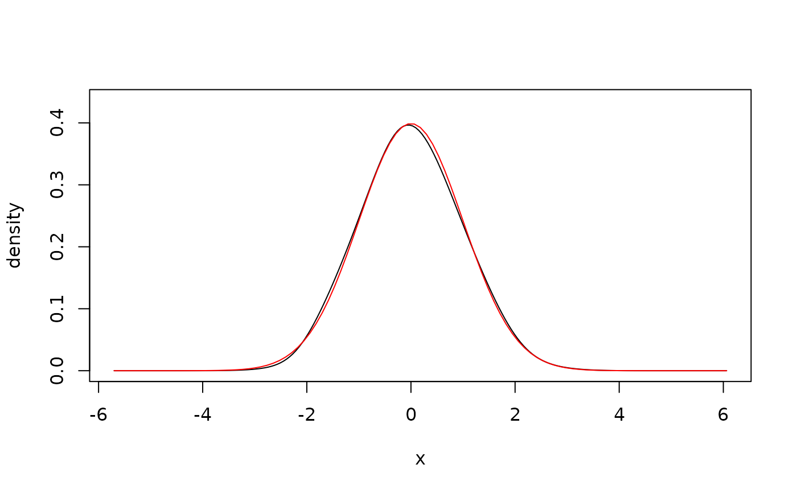
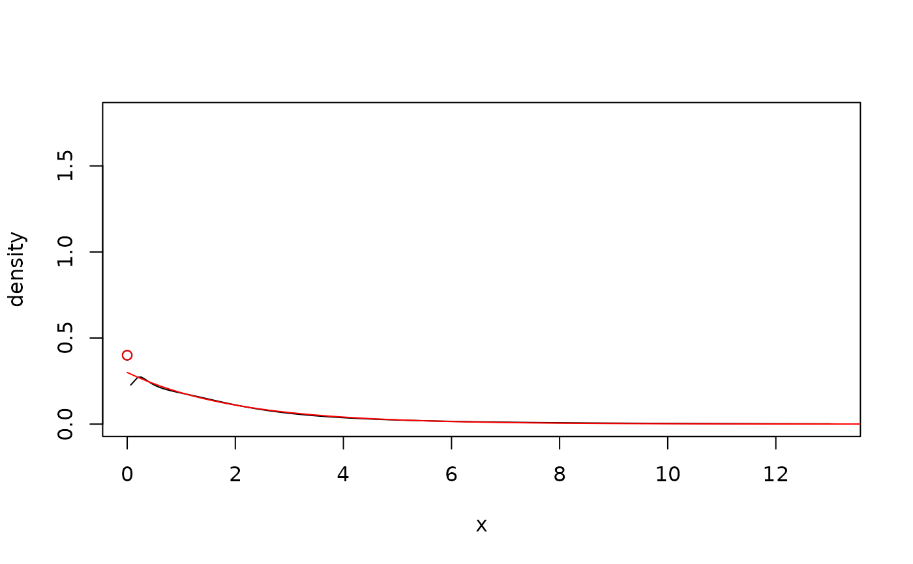
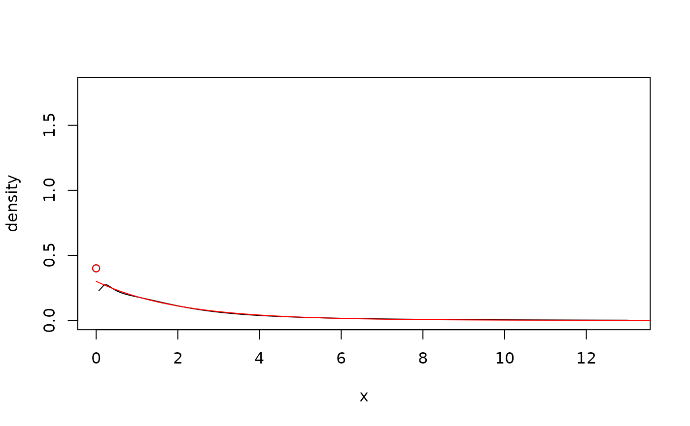

The estimators can handle data with bounded, unbounded, and discrete support, see Details.
Usage
kde1d(
x,
xmin = NaN,
xmax = NaN,
type = "continuous",
mult = 1,
bw = NA,
deg = 2,
weights = numeric(0)
)Arguments
- x
vector (or one-column matrix/data frame) of observations; can be
numericorordered.- xmin
lower bound for the support of the density (only for continuous data);
NaNmeans no boundary.- xmax
upper bound for the support of the density (only for continuous data);
NaNmeans no boundary.- type
variable type; must be one of c, cont, continuous for continuous variables, one of d, disc, discrete for discrete integer variables, or one of zi, zinfl, zero-inflated for zero-inflated variables.
- mult
positive bandwidth multiplier; the actual bandwidth used is \(bw*mult\).
- bw
bandwidth parameter; has to be a positive number or
NA; the latter uses the plug-in methodology of Sheather and Jones (1991) with appropriate modifications fordeg > 0.- deg
degree of the polynomial; either
0,1, or2for log-constant, log-linear, and log-quadratic fitting, respectively.- weights
optional vector of weights for individual observations.
Details
A Gaussian kernel is used in all cases. If xmin or xmax are
finite, the density estimate will be 0 outside of \([xmin, xmax]\). A
log-transform is used if there is only one boundary (see, Geenens and Wang,
2018); a probit transform is used if there are two (see, Geenens, 2014).
Discrete variables are handled via jittering (see, Nagler, 2018a, 2018b).
A specific form of deterministic jittering is used, see equi_jitter().
Zero-inflated densities are estimated by a hurdle-model with discrete
mass at 0 and the remainder estimated as for type = "continuous".
References
Geenens, G. (2014). Probit transformation for kernel density estimation on the unit interval. Journal of the American Statistical Association, 109:505, 346-358, arXiv:1303.4121
Geenens, G., Wang, C. (2018). Local-likelihood transformation kernel density estimation for positive random variables. Journal of Computational and Graphical Statistics, to appear, arXiv:1602.04862
Nagler, T. (2018a). A generic approach to nonparametric function estimation with mixed data. Statistics & Probability Letters, 137:326–330, arXiv:1704.07457
Nagler, T. (2018b). Asymptotic analysis of the jittering kernel density estimator. Mathematical Methods of Statistics, in press, arXiv:1705.05431
Sheather, S. J. and Jones, M. C. (1991). A reliable data-based bandwidth selection method for kernel density estimation. Journal of the Royal Statistical Society, Series B, 53, 683–690.
Examples
## unbounded data
x <- rnorm(500) # simulate data
fit <- kde1d(x) # estimate density
dkde1d(0, fit) # evaluate density estimate
#> [1] 0.3959919
summary(fit) # information about the estimate
#> kernel density estimate ('kde1d'), log-quadratic
#> -----------------------------------------------------------------
#> nobs = 500, bw = 0.7, mult = 1, loglik = -712, d.f. = 4.5
plot(fit) # plot the density estimate
curve(dnorm(x),
add = TRUE, # add true density
col = "red"
)

## bounded data, log-linear
x <- rgamma(500, shape = 1) # simulate data
fit <- kde1d(x, xmin = 0, deg = 1) # estimate density
dkde1d(seq(0, 5, by = 1), fit) # evaluate density estimate
#> [1] 2.410773e+02 3.409695e-01 1.155670e-01 3.952077e-02 8.081342e-03
#> [6] 1.124834e-03
summary(fit) # information about the estimate
#> kernel density estimate ('kde1d'), log-linear with bounded support (xmin = 0)
#> -----------------------------------------------------------------
#> nobs = 500, bw = 0.3, mult = 1, loglik = -450.93, d.f. = 12.9
plot(fit) # plot the density estimate
curve(dgamma(x, shape = 1), # add true density
add = TRUE, col = "red",
from = 1e-3
)
 ## discrete data
x <- rbinom(500, size = 5, prob = 0.5) # simulate data
fit <- kde1d(x, xmin = 0, xmax = 5, type = "discrete") # estimate density
fit <- kde1d(ordered(x, levels = 0:5)) # alternative API
dkde1d(sort(unique(x)), fit) # evaluate density estimate
#> [1] 0.04748002 0.16131239 0.29095675 0.30368795 0.16312587 0.03343701
summary(fit) # information about the estimate
#> (jittered) kernel density estimate ('kde1d'), log-quadratic with bounded support (xmin = 0, xmax = 5)
#> -----------------------------------------------------------------
#> nobs = 500, bw = 1.12, mult = 1, loglik = -787.1, d.f. = 9.97
plot(fit) # plot the density estimate
points(ordered(0:5, 0:5), # add true density
dbinom(0:5, 5, 0.5),
col = "red"
)
## discrete data
x <- rbinom(500, size = 5, prob = 0.5) # simulate data
fit <- kde1d(x, xmin = 0, xmax = 5, type = "discrete") # estimate density
fit <- kde1d(ordered(x, levels = 0:5)) # alternative API
dkde1d(sort(unique(x)), fit) # evaluate density estimate
#> [1] 0.04748002 0.16131239 0.29095675 0.30368795 0.16312587 0.03343701
summary(fit) # information about the estimate
#> (jittered) kernel density estimate ('kde1d'), log-quadratic with bounded support (xmin = 0, xmax = 5)
#> -----------------------------------------------------------------
#> nobs = 500, bw = 1.12, mult = 1, loglik = -787.1, d.f. = 9.97
plot(fit) # plot the density estimate
points(ordered(0:5, 0:5), # add true density
dbinom(0:5, 5, 0.5),
col = "red"
)
 ## zero-inflated data
x <- rexp(500, 0.5) # simulate data
x[sample(1:500, 200)] <- 0 # add zero-inflation
fit <- kde1d(x, xmin = 0, type = "zi") # estimate density
dkde1d(sort(unique(x)), fit) # evaluate density estimate
#> [1] 0.400000000 0.945612842 0.818604772 0.455734119 0.241285265 0.242986240
#> [7] 0.239167381 0.239154410 0.231873326 0.231640897 0.227679350 0.227941727
#> [13] 0.228115875 0.228392329 0.231824469 0.247552599 0.248169414 0.260252361
#> [19] 0.261285523 0.262636196 0.262659503 0.269860517 0.269903240 0.270833535
#> [25] 0.271936266 0.274560461 0.274998734 0.275051204 0.275051598 0.275058072
#> [31] 0.274965048 0.274787163 0.273439759 0.272843700 0.272798806 0.271098439
#> [37] 0.270949734 0.268904505 0.266518146 0.266282392 0.265554419 0.264728933
#> [43] 0.263746070 0.263157885 0.262355208 0.261344425 0.260831219 0.259501335
#> [49] 0.257699690 0.256259201 0.254733183 0.252359067 0.250475476 0.250451070
#> [55] 0.249547912 0.247046050 0.245742698 0.242230039 0.240353021 0.235931992
#> [61] 0.235625216 0.233530170 0.232322117 0.231725028 0.231181064 0.228942127
#> [67] 0.228521752 0.227339281 0.226756267 0.223378237 0.221814013 0.221657609
#> [73] 0.220504553 0.219768537 0.217815832 0.217792479 0.216208100 0.216044564
#> [79] 0.215289040 0.211472798 0.208772616 0.207023642 0.203385365 0.203116401
#> [85] 0.202738336 0.202416527 0.202012524 0.201185662 0.198112696 0.198052873
#> [91] 0.196916782 0.196161819 0.195055773 0.191700476 0.191195584 0.191033747
#> [97] 0.190875647 0.190232786 0.189810615 0.188685031 0.187297745 0.186848618
#> [103] 0.185906792 0.184151531 0.182927571 0.179511318 0.179505204 0.179407086
#> [109] 0.179224982 0.178487524 0.177830785 0.175885063 0.175674130 0.175612183
#> [115] 0.174266449 0.173277186 0.172866408 0.172387381 0.172184461 0.172069992
#> [121] 0.171831508 0.171668891 0.171462740 0.170607133 0.170584930 0.167078293
#> [127] 0.166364257 0.164589397 0.164046885 0.163396158 0.160303249 0.159128368
#> [133] 0.158753576 0.158501369 0.157568714 0.156699594 0.156294792 0.156269744
#> [139] 0.155439131 0.152996531 0.152583810 0.151429575 0.150132787 0.150130705
#> [145] 0.148961791 0.147964566 0.147571037 0.146151379 0.145048276 0.144681234
#> [151] 0.144460651 0.142911339 0.140874340 0.140766451 0.140270247 0.139428589
#> [157] 0.139294810 0.138904895 0.137510490 0.137285210 0.136351395 0.135963510
#> [163] 0.135548099 0.135042017 0.134333283 0.132975594 0.132576341 0.132082915
#> [169] 0.131963904 0.130928272 0.130837149 0.130508460 0.129874170 0.128477526
#> [175] 0.127308598 0.127037929 0.125287130 0.122471857 0.121243431 0.120603974
#> [181] 0.119938923 0.116359186 0.114696110 0.112700486 0.112517497 0.111174686
#> [187] 0.110077949 0.107902693 0.107422847 0.107391683 0.107110394 0.107083800
#> [193] 0.106421623 0.105388996 0.103086575 0.102817083 0.100013063 0.099472444
#> [199] 0.098738360 0.098367301 0.098252232 0.096823135 0.095071456 0.092433981
#> [205] 0.091058378 0.089517563 0.088678100 0.088327634 0.088134003 0.087042462
#> [211] 0.086725308 0.086156363 0.083457498 0.083034471 0.078325207 0.077074038
#> [217] 0.075141391 0.075038380 0.074037735 0.073217029 0.073129061 0.071728456
#> [223] 0.071438505 0.071082225 0.070381092 0.069935289 0.069314466 0.067085731
#> [229] 0.061820488 0.060650953 0.059618183 0.058227504 0.057812511 0.057459024
#> [235] 0.056645143 0.055990558 0.054920423 0.054787931 0.053998641 0.053841419
#> [241] 0.051143627 0.050421651 0.050130110 0.047093342 0.046534293 0.045850161
#> [247] 0.042353628 0.042196234 0.042063118 0.041587525 0.040610509 0.040082131
#> [253] 0.038558727 0.033671878 0.033153718 0.031371246 0.030571636 0.030250131
#> [259] 0.029974120 0.029685048 0.028133386 0.027367576 0.026249164 0.025934372
#> [265] 0.025051620 0.024964171 0.024182951 0.023333896 0.018668197 0.017247140
#> [271] 0.015823147 0.014824248 0.014589536 0.014301296 0.013760137 0.013618208
#> [277] 0.012752531 0.011801894 0.011626021 0.011473442 0.010009840 0.009717812
#> [283] 0.008828965 0.007897291 0.007859096 0.007702932 0.007118582 0.007019149
#> [289] 0.006827551 0.006745428 0.006141251 0.004765744 0.004712858 0.004349564
#> [295] 0.004084267 0.003530677 0.003013191 0.002928466 0.002789458 0.001961111
#> [301] 0.001367393
summary(fit) # information about the estimate
#> (zero-inflated) kernel density estimate ('kde1d'), log-quadratic with bounded support (xmin = 0)
#> -----------------------------------------------------------------
#> nobs = 500, bw = 0.74, mult = 1, loglik = -696.52, d.f. = NaN
plot(fit) # plot the density estimate
lines( # add true density
seq(0, 20, l = 100),
0.6 * dexp(seq(0, 20, l = 100), 0.5),
col = "red"
)
points(0, 0.4, col = "red")

## weighted estimate
x <- rnorm(100) # simulate data
weights <- rexp(100) # weights as in Bayesian bootstrap
fit <- kde1d(x, weights = weights) # weighted fit
plot(fit) # compare with unweighted fit
lines(kde1d(x), col = 2)
## zero-inflated data
x <- rexp(500, 0.5) # simulate data
x[sample(1:500, 200)] <- 0 # add zero-inflation
fit <- kde1d(x, xmin = 0, type = "zi") # estimate density
dkde1d(sort(unique(x)), fit) # evaluate density estimate
#> [1] 0.400000000 0.945612842 0.818604772 0.455734119 0.241285265 0.242986240
#> [7] 0.239167381 0.239154410 0.231873326 0.231640897 0.227679350 0.227941727
#> [13] 0.228115875 0.228392329 0.231824469 0.247552599 0.248169414 0.260252361
#> [19] 0.261285523 0.262636196 0.262659503 0.269860517 0.269903240 0.270833535
#> [25] 0.271936266 0.274560461 0.274998734 0.275051204 0.275051598 0.275058072
#> [31] 0.274965048 0.274787163 0.273439759 0.272843700 0.272798806 0.271098439
#> [37] 0.270949734 0.268904505 0.266518146 0.266282392 0.265554419 0.264728933
#> [43] 0.263746070 0.263157885 0.262355208 0.261344425 0.260831219 0.259501335
#> [49] 0.257699690 0.256259201 0.254733183 0.252359067 0.250475476 0.250451070
#> [55] 0.249547912 0.247046050 0.245742698 0.242230039 0.240353021 0.235931992
#> [61] 0.235625216 0.233530170 0.232322117 0.231725028 0.231181064 0.228942127
#> [67] 0.228521752 0.227339281 0.226756267 0.223378237 0.221814013 0.221657609
#> [73] 0.220504553 0.219768537 0.217815832 0.217792479 0.216208100 0.216044564
#> [79] 0.215289040 0.211472798 0.208772616 0.207023642 0.203385365 0.203116401
#> [85] 0.202738336 0.202416527 0.202012524 0.201185662 0.198112696 0.198052873
#> [91] 0.196916782 0.196161819 0.195055773 0.191700476 0.191195584 0.191033747
#> [97] 0.190875647 0.190232786 0.189810615 0.188685031 0.187297745 0.186848618
#> [103] 0.185906792 0.184151531 0.182927571 0.179511318 0.179505204 0.179407086
#> [109] 0.179224982 0.178487524 0.177830785 0.175885063 0.175674130 0.175612183
#> [115] 0.174266449 0.173277186 0.172866408 0.172387381 0.172184461 0.172069992
#> [121] 0.171831508 0.171668891 0.171462740 0.170607133 0.170584930 0.167078293
#> [127] 0.166364257 0.164589397 0.164046885 0.163396158 0.160303249 0.159128368
#> [133] 0.158753576 0.158501369 0.157568714 0.156699594 0.156294792 0.156269744
#> [139] 0.155439131 0.152996531 0.152583810 0.151429575 0.150132787 0.150130705
#> [145] 0.148961791 0.147964566 0.147571037 0.146151379 0.145048276 0.144681234
#> [151] 0.144460651 0.142911339 0.140874340 0.140766451 0.140270247 0.139428589
#> [157] 0.139294810 0.138904895 0.137510490 0.137285210 0.136351395 0.135963510
#> [163] 0.135548099 0.135042017 0.134333283 0.132975594 0.132576341 0.132082915
#> [169] 0.131963904 0.130928272 0.130837149 0.130508460 0.129874170 0.128477526
#> [175] 0.127308598 0.127037929 0.125287130 0.122471857 0.121243431 0.120603974
#> [181] 0.119938923 0.116359186 0.114696110 0.112700486 0.112517497 0.111174686
#> [187] 0.110077949 0.107902693 0.107422847 0.107391683 0.107110394 0.107083800
#> [193] 0.106421623 0.105388996 0.103086575 0.102817083 0.100013063 0.099472444
#> [199] 0.098738360 0.098367301 0.098252232 0.096823135 0.095071456 0.092433981
#> [205] 0.091058378 0.089517563 0.088678100 0.088327634 0.088134003 0.087042462
#> [211] 0.086725308 0.086156363 0.083457498 0.083034471 0.078325207 0.077074038
#> [217] 0.075141391 0.075038380 0.074037735 0.073217029 0.073129061 0.071728456
#> [223] 0.071438505 0.071082225 0.070381092 0.069935289 0.069314466 0.067085731
#> [229] 0.061820488 0.060650953 0.059618183 0.058227504 0.057812511 0.057459024
#> [235] 0.056645143 0.055990558 0.054920423 0.054787931 0.053998641 0.053841419
#> [241] 0.051143627 0.050421651 0.050130110 0.047093342 0.046534293 0.045850161
#> [247] 0.042353628 0.042196234 0.042063118 0.041587525 0.040610509 0.040082131
#> [253] 0.038558727 0.033671878 0.033153718 0.031371246 0.030571636 0.030250131
#> [259] 0.029974120 0.029685048 0.028133386 0.027367576 0.026249164 0.025934372
#> [265] 0.025051620 0.024964171 0.024182951 0.023333896 0.018668197 0.017247140
#> [271] 0.015823147 0.014824248 0.014589536 0.014301296 0.013760137 0.013618208
#> [277] 0.012752531 0.011801894 0.011626021 0.011473442 0.010009840 0.009717812
#> [283] 0.008828965 0.007897291 0.007859096 0.007702932 0.007118582 0.007019149
#> [289] 0.006827551 0.006745428 0.006141251 0.004765744 0.004712858 0.004349564
#> [295] 0.004084267 0.003530677 0.003013191 0.002928466 0.002789458 0.001961111
#> [301] 0.001367393
summary(fit) # information about the estimate
#> (zero-inflated) kernel density estimate ('kde1d'), log-quadratic with bounded support (xmin = 0)
#> -----------------------------------------------------------------
#> nobs = 500, bw = 0.74, mult = 1, loglik = -696.52, d.f. = NaN
plot(fit) # plot the density estimate
lines( # add true density
seq(0, 20, l = 100),
0.6 * dexp(seq(0, 20, l = 100), 0.5),
col = "red"
)
points(0, 0.4, col = "red")

## weighted estimate
x <- rnorm(100) # simulate data
weights <- rexp(100) # weights as in Bayesian bootstrap
fit <- kde1d(x, weights = weights) # weighted fit
plot(fit) # compare with unweighted fit
lines(kde1d(x), col = 2)